건설기계설비기사 (2021-05-15 기출문제)
1과목: 재료역학
1. 그림과 같은 단면에서 가로방향 도심축에 대한 단면 2차모멘트는 약 몇 mm4인가?
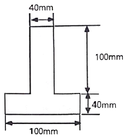
- 10.67×106
- 13.67×106
- 20.67×106
- 23.67×106
(정답률: 60%)

2. 바깥지름이 46mm인 속이 빈 축이 120kW의 동력을 전달하는데 이 때의 각속도는 40rev/s이다. 이 축의 허용비틀림응력이 80MPa 일 때, 안지름은 약 몇 mm 이하이어야 하는가?
- 29.8
- 41.8
- 36.8
- 48.8
(정답률: 알수없음)
3. 그림과 같이 평면응력 조건하에 최대 주응력은 몇 kPa 인가? (단, σx = 400kPa, σv = -400kPa, τxy = 300kPa 이다.)
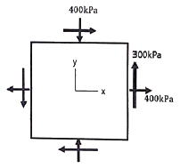
- 400
- 500
- 600
- 700
(정답률: 80%)
4. 다음 보에 발생하는 최대 굽힘 모멘트는?
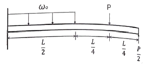
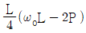
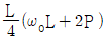
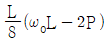
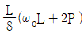
(정답률: 82%)
5. 지름 200mm인 축이 120rpm으로 회전하고 있다. 2m 떨어진 두 단면에서 측정한 비틀림 각이 1/15 rad 이었다면 이 축에 작용하고 있는 비틀림 모멘트는 약 몇 kN·m 인가? (단, 가로탄성계수는 80 GPa 이다.)
- 418.9
- 356.6
- 3⑤.7
- 286.8
(정답률: 64%)
6. 그림과 같은 단순보의 중앙점(C)에서 굽힘모멘트는?
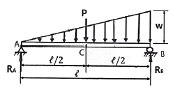
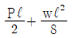
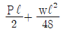
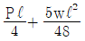
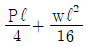
(정답률: 60%)
7. 반경 r, 내압 P, 두께 t인 얇은 원통형 압력용기의 면내에서 발생되는 최대전단응력(2차원 응력 상태에서의 최대전단응력)의 크기는?
- Pr/2t
- Pr/t
- Pr/4t
- 2Pr/t
(정답률: 40%)
8. 길이가 15m, 봉의 지름 10mm인 강봉에 P=8kN 을 작용시킬 때 이 봉의 길이방향 변형량은 약 몇 mm 인가? (단, 이 재료의 세로탄성계수는 210GPa 이다.)
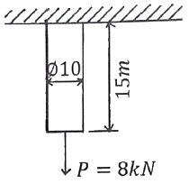
- 5.2
- 6.4
- 7.3
- 8.5
(정답률: 알수없음)
9. 그림과 같은 직사각형 단면의 목재 외팔보에 집중하중 P가 C점에 작용하고 있다. 목재의 허용압축응력을 8MPa, 끝단 B점에서의 허용 처짐량을 23.9mm라고 할 때 허용압축응력과 허용 처짐량을 모두 고려하여 이 목재에 가할 수 있는 집중하중 P의 최대값은 약 몇 kN 인가? (단, 목재의 세로탄성계수는 12GPa, 단면2차모멘트는 1022×10-6m4, 단면계수는 4.601×10-3m3 이다.)
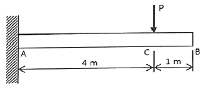
- 7.8
- 8.5
- 9.2
- 10.0
(정답률: 알수없음)
10. 알루미늄봉이 그림과 같이 축하중을 받고 있다. BC간에 작용하고 있는 하중의 크기는?
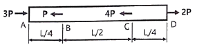
- 2P
- 3P
- 4P
- 8P
(정답률: 91%)
11. 그림과 같이 전체 길이가 3L인 외팔보에 하중 P가 B점과 C점에 작용할 때 자유단 B에서의 처짐량은? (단, 보의 굽힘강성 EI는 일정하고, 자중은 무시한다.)
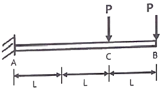
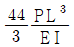
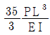
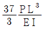
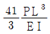
(정답률: 알수없음)
12. 허용인장강도가 400MPa인 연강봉에 30kN의 축방향 인장하중이 가해질 경우 이 강봉의 지름은 약 몇 cm 인가? (단, 안전율은 5 이다.)
- 2.69
- 2.93
- 2.19
- 3.33
(정답률: 알수없음)
13. 다음과 같이 3개의 링크를 핀을 이용하여 연결하였다. 2000N의 하중 P가 작용할 경우 핀에 작용되는 전단응력은 약 몇 MPa 인가? (단, 핀의 지름은 1cm 이다.)
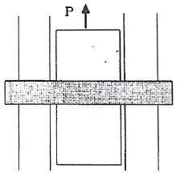
- 12.73
- 13.24
- 15.63
- 16.56
(정답률: 46%)
14. 단면적이 5cm2, 길이가 60cm인 연강봉을 천장에 매달고 30℃에서 0℃로 냉각시킬 때 길이의 변화를 없게 하려면 봉의 끝에 몇 kN의 추를 달아야 하는가? (단, 세로탄성계수 200GPa, 열팽창계수 a = 12×10-6/℃이고, 봉의 자중은 무시한다.)
- 60
- 36
- 30
- 24
(정답률: 84%)
15. 전체 길이에 걸쳐서 균일 분포하중 200N/m가 작용하는 단순 지지보의 최대 굽힘응력은 몇 MPa 인가? (단, 폭×높이 = 3cm×4cm인 직사각형 단면이고, 보의 길이는 2m 이다. 또한 보의 지점은 양 끝단에 있다.)
- 12.5
- 25.0
- 14.9
- 29.8
(정답률: 60%)
16. 그림과 같이 균일분포 하중을 받는 외팔보에 대해 굽힘에 의한 탄성변형에너지는? (단, 굽힘강성 EI는 일정하다.)
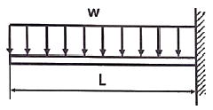
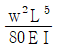
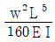
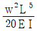
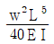
(정답률: 알수없음)
17. 지름 50mm인 중실축 ABC가 A에서 모터에 의해 구동된다. 모터는 600rpm으로 50kW의 동력을 전달한다. 기계를 구동하기 위해서 기어 B는 35kW, 기어 C는 15kW를 필요로 한다. 축 ABC에 발생하는 최대 전단응력은 몇 MPa 인가?
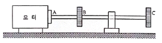
- 9.73
- 22.7
- 32.4
- 64.8
(정답률: 80%)
18. 그림과 같이 길이가 2L인 양단고정보의 중앙에 집중하중이 아래로 가해지고 잇다. 이때 중앙에서 모멘트 M이 발생하였다면 이 집중하중(P)의 크기는 어떻게 표현되는가?
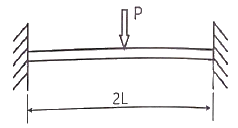
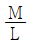
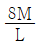
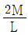
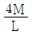
(정답률: 알수없음)
19. 5cm×4cm블록이 x축을 따라 0.⑤cm 만큼 인장되엇다. y방향으로 수축되는 변형률(εy)은? (단, 포아송 비(ν)는 0.3 이다.)
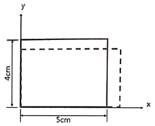
- 0.00015
- 0.0015
- 0.003
- 0.03
(정답률: 알수없음)
20. 직사각형 단면의 단주에 150kN 하중이 중심에서 1m 만큼 편심되어 작용할 때 이 부재 AC에서 생기는 최대 인장응력은 몇 kPa 인가?
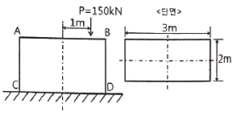
- 25
- 50
- 87.5
- 100
(정답률: 42%)
2과목: 기계열역학
21. 4kg의 공기를 온도 15℃에서 일정 체적으로 가열하여 엔트로피가 3.35 kJ/K 증가하였다. 이때 온도는 약 몇 K 인가? (단, 공기의 정적비열은 0.717 kJ/(kg·K) 이다.)
- 927
- 337
- 533
- 483
(정답률: 알수없음)
22. 어느 왕복동 내연기관에서 실린더 안지름이 6.8cm, 행정이 8cm 일 때 평균유효압력은 1200kPa 이다. 이 기관의 1행정당 유효 일은 약 몇 kJ 인가?
- 0.09
- 0.15
- 0.35
- 0.48
(정답률: 60%)
23. 완전히 단열된 실린더 안의 공기가 피스톤을 밀어 외부로 일을 하였다. 이 때 외부로 행한 일의 양과 동일한 값(절대값 기준)을 가지는 것은?
- 공기의 엔탈피 변화량
- 공기의 온도 변화량
- 공기의 엔트로피 변화량
- 공기의 내부에너지 변화량
(정답률: 92%)
24. 유리창을 통해 실내에서 실외로 열전달이 일어난다. 이때 열전달량은 약 몇 W 인가? (단, 대류열전달계수는 50W/(m2·K), 유리창 표면온도는 25℃, 외기온도는 10℃, 유리창면적은 2m2 이다.)
- 150
- 500
- 1500
- 5000
(정답률: 93%)
25. 보일러, 터빈, 응축기, 펌프로 구성되어 있는 증기원동소가 있다. 보일러에서 2500kW의 열이 발생하고 터빈에서 550kW의 일을 발생시킨다. 또한, 펌프를 구동하는데 20kW의 동력이 추가로 소모된다면 응축기에서의 방열량은 약 몇 kW 인가?
- 980
- 1930
- 1970
- 3070
(정답률: 알수없음)
26. 질량이 5kg인 강제 용기 속에 물이 20L 들어있다. 용기와 물이 24℃인 상태에서 이 속에 질량이 5kg이고 온도가 180℃인 어떤 물체를 넣었더니 일정 시간 후 온도가 35℃가 되면서 열평형에 도달하였다. 이 때 이 물체의 비열은 약 몇 kJ/(kg·K)인가? (단, 물의 비열은 4.2 kJ/(kg·K), 강의 비열은 0.46 kJ/(kg·K)이다.)
- 0.88
- 1.12
- 1.31
- 1.86
(정답률: 60%)
27. 냉동기 냉매의 일반적인 구비조건으로서 적합하지 않은 것은?
- 임계 온도가 높고, 응고 온도가 낮을 것
- 증발열이 작고, 증기의 비체적이 클 것
- 증기 및 액체의 점성(점성계수)이 작을 것
- 부식성이 없고, 안정성이 있을 것
(정답률: 73%)
28. 다음 4가지 경우에서 ( ) 안의 물질이 보유한 엔트로피가 증가한 경우는?
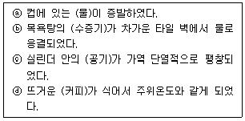
- ⓐ
- ⓑ
- ⓒ
- ⓓ
(정답률: 알수없음)
29. 열역학 제2법칙과 관계된 설명으로 가장 옳은 것은?
- 과정(상태변화)의 방향성을 제시한다.
- 열역학적 에너지의 양을 결정한다.
- 열역학적 에너지의 종류를 판단한다.
- 과정에서 발생한 총 일의 양을 결정한다.
(정답률: 93%)
30. 실린더에 밀폐된 8kg의 공기가 그림과 같이 압력 P1=800kPa, 체적 V1=0.27m3 에서 P2=350kPa, V2=0.80m3으로 직선 변화하였다. 이 과정에서 공기가 한 일은 약 몇 kJ 인가?
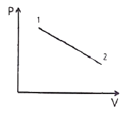
- 3⑤
- 334
- 362
- 390
(정답률: 73%)
31. 복사열을 방사하는 방사율과 면적이 같은 2개의 방열판이 있다. 각각의 온도가 A 방열판은 120℃, B 방열판은 80℃ 일 때 두 방열판의 복사 열전달량(QA/QB) 비는?
- 1.08
- 1.22
- 1.54
- 2.42
(정답률: 57%)
32. 이상적인 오토사이클의 열효율이 56.5% 이라면 압축비는 약 얼마인가? (단, 작동 유체의 비열비는 1.4로 일정하다.)
- 7.5
- 8.0
- 9.0
- 9.5
(정답률: 70%)
33. 어떤 열기관이 550K의 고열원으로부터 20kJ의 열량을 공급받아 250K의 저열원에 14kJ의 열량을 방출할 때 이 사이클의 Clausius 적분값과 가역, 비가역 여부의 설명으로 옳은 것은?
- Clausius 적분값은 –0.0196kJ/K 이고 가역사이클이다.
- Clausius 적분값은 –0.0196kJ/K 이고 비가역사이클이다.
- Clausius 적분값은 0.0196kJ/K 이고 가역사이클이다.
- Clausius 적분값은 0.0196kJ/K 이고 비가역사이클이다.
(정답률: 90%)
34. 그림과 같은 Rankine 사이클의 열효율은 약 얼마인가? (단, h는 엔탈피, s는 엔트로피를 나타내며, h1=191.8 kJ/kg, h2=193.8 kJ/kg, h3=2799.5 kJ/kg, h4=2007.5 kJ/kg 이다.)
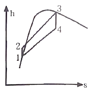
- 30.3%
- 36.7%
- 42.9%
- 48.1%
(정답률: 60%)
35. 오토 사이클로 작동되는 기관에서 실린더의 극간 체적(clearance volume)이 행정 체적(stroke volume)의 15%라고 하면 이론 열효율은 약 얼마인가? (단, 비열비 k=1.4 이다.)
- 39.3%
- 45.2%
- 50.6%
- 55.7%
(정답률: 알수없음)
36. 상태 1에서 경로 A를 따라 상태 2로 변화하고 경로 B를 따라 다시 상태 1로 돌아오는 가역 사이클이 있다. 아래의 사이클에 대한 설명으로 틀린 것은?
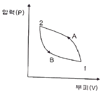
- 사이클 과정 동안 시스템의 내부에너지 변화량은 0 이다.
- 사이클 과정 동안 시스템은 외부로부터 순(net) 일을 받았다.
- 사이클 과정 동안 시스템의 내부에서 외부로 순(net) 열이 전달되었다.
- 이 그림으로 사이클 과정 동안 총 엔트로피 변화량을 알 수 없다.
(정답률: 알수없음)
37. 기체상수가 0.462kJ/(kg·K)인 수증기를 이상기체로 간주할 때 정압비열(kJ/(kg·K))은 약 얼마인가? (단, 이 수증기의 비열비는 1.33 이다.)
- 1.86
- 1.54
- 0.64
- 0.44
(정답률: 알수없음)
38. 카르노사이클로 작동되는 열기관이 200kJ의 열을 200℃에서 공급받아 20℃에서 방출한다면 이 기관의 일은 약 얼마인가?
- 38 kJ
- 54 kJ
- 63 kJ
- 76 kJ
(정답률: 55%)
39. 압력 100kPa, 온도 20℃인 일정량의 이상기체가 있다. 압력을 일정하게 유지하면서 부피가 처음 부피의 2배가 되었을 때 기체의 온도는 약 몇 ℃가 되는가?
- 148
- 256
- 313
- 586
(정답률: 55%)
40. 시스템 내의 임의의 이상기체 1kg이 채워져 있다. 이 기체의 정압비열은 1.0 kJ/(kg·K)이고, 초기 온도가 50℃인 상태에서 323kJ의 열량을 가하여 팽창시킬 때 변경 후 체적은 변경 전 체적의 약 몇 배가 되는가? (단, 정압과정으로 팽창한다.)
- 1.5배
- 2배
- 2.5배
- 3배
(정답률: 82%)
3과목: 기계유체역학
41. 어떤 물체의 속도가 초기 속도의 2배가 되었을 때 항력계수가 초기 항력계수의 1/2로 줄었다. 초기에 물체가 받는 저항력이 D라고 할 때 변화된 저항력은 얼마가 되는가?
- 2D
- 4D
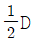
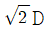
(정답률: 70%)
42. 단면적이 각각 10cm2와 20cm2인 관이 서로 연결되어 있다. 비압축성 유동이라 가정하면 20cm2 관속의 평균유속이 2.4m/s 일 때 10cm2 관내의 평균속도는 약 몇 m/s 인가?
- 4.8
- 1.2
- 9.6
- 2.4
(정답률: 알수없음)
43. 5℃의 물[점성계수 1.5×10-3 kg/(m·s)]이 안지름 0.25cm, 길이 10m인 수평관 내부를 1m/s로 흐른다. 이 때 레이놀즈수는 얼마인가?
- 166.7
- 600
- 1666.7
- 6000
(정답률: 62%)
44. 비압축성 유동에 대한 Navier-Stokes 방정식에서 나타나지 않는 힘은?
- 체적력(중력)
- 압력
- 점성력
- 표면장력
(정답률: 알수없음)
45. 그림과 같은 수문에서 멈춤장치 A가 받는 힘은 약 몇 kN 인가? (단, 수문의 폭은 3m 이고, 수은의 비중은 13.6 이다.)
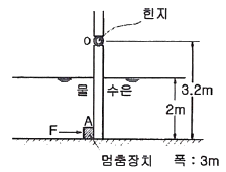
- 37
- 510
- 586
- 879
(정답률: 알수없음)
46. 수력구배선(hydraulic grade line)에 대한 설명으로 옳은 것은?
- 에너지선보다 위에 있어야 한다.
- 항상 수평선이다.
- 위치수두와 속도수두의 합을 나타내며 주로 에너지선 아래에 있다.
- 위치수두와 압력수두의 합을 나타내며 주로 에너지선 아래에 있다.
(정답률: 80%)
47. 그림과 같이 바닥부 단면적이 1m2인 탱크에 설치된 노즐에서 수면과 노즐 중심부 사이 높이가 1m 인 경우 유량을 Q라고 한다. 이 유량을 2배로 하기 위해서는 수면 상에 약 몇 kg 정도의 피스톤을 놓아야 하는가?
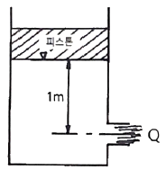
- 1000
- 2000
- 3000
- 4000
(정답률: 알수없음)
48. 매끄러운 원관에서 물의 속도가 V일 때 압력강하가 △p1이었고, 이때 완전한 난류유동이 발생되었다. 속도는 2V로 하여 실험을 하였다면 압력강하는 얼마가 되는가?
- △p1
- 2△p1
- 4△p1
- 8△p1
(정답률: 67%)
49. 2차원 직각좌표계(x, y)에서 유동함수(stream function, ψ)가 ψ = y-x2인 정상 유동이 있다. 다음 보기 중 속도의 크기가 √5인 점(x, y)을 모두 고르면?
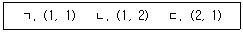
- ㄱ
- ㄷ
- ㄱ, ㄴ
- ㄴ, ㄷ
(정답률: 알수없음)
50. 압력과 밀도를 각각 P, ρ라 할 때
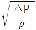
의 차원은? (단, M, L, T는 각각 질량, 길이, 시간의 차원을 나타낸다.)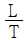
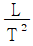
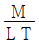
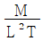
(정답률: 64%)
51. 마노미터를 설치하여 액체탱크의 수압을 측정하려고 한다. 수은(비중 = 13..6) 액주의 높이차 H = 50cm 이면 A점에서의 계기압력은 약 얼마인가? (단, 액체의 밀도는 900 kg/m3 이다.)
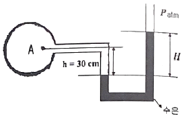
- 63.9 kPa
- 4.2 kPa
- 63.9 Pa
- 4.2 Pa
(정답률: 알수없음)
52. 비중이 0.85 이고 동점성계수가 3×10-4 m2/s 인 기름이 안지름 10cm 원관 내를 20L/s로 흐른다. 이 원관 100m 길이에서의 수두손실은 약 몇 m 인가?
- 16.6
- 24.9
- 49.8
- 82.1
(정답률: 73%)
53. 동점성계수가 10cm2/s 이고 비중이 1.2인 유체의 점성계수는 몇 Pa·s 인가?
- 1.2
- 0.12
- 2.4
- 0.24
(정답률: 67%)
54. 지름 D인 구가 점성계수 μ인 유체 속에서, 관성을 무시할 수 있는 정도로 느린 속도 V로 움직일 때 받는 힘 F를 D, μ, V의 함수로 가정하여 차원해석 하였을 때 얻을 수 있는 식은?
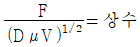
(정답률: 60%)
55. 다음 중 Hagen-Poiseuille 법칙을 이용한 세관식 점도계는?
- 맥미셸(MacMichael) 점도계
- 세이볼트(Saybolt) 점도계
- 낙구식 점도계
- 스토머(Stormer) 점도계
(정답률: 46%)
56. 길이 100m의 배를 길이 5m인 모형으로 실험할 때, 실형이 40km/h로 움직이는 경우와 역학적 상사를 만족시키기 위한 모형의 속도는 약 몇 km/h 인가? (단, 점성마찰은 무시한다.)
- 4.66
- 8.94
- 12.96
- 18.42
(정답률: 알수없음)
57. 한 변이 2m인 위가 열려있는 정육면체 통에 물을 가득 담아 수평방향으로 9.8m/s2의 가속도로 잡아당겼을 때 통에 남아 있는 물의 양은 약 몇 m3 인가?
- 8
- 4
- 2
- 1
(정답률: 알수없음)
58. 밀도가 ρ인 액체와 접촉하고 있는 기체 사이의 표면장력이 σ라고 할 때 그림과 같은 지름 d의 원통 모세관에서 액주의 높이 h를 구하는 식은? (단, g는 중력가속도이다.)
(정답률: 알수없음)
59. 그림과 같이 비중이 0.83인 기름이 12m/s의 속도로 수직 고정평판에 직각으로 부딪치고 있다. 판에 작용하는 힘 F는 약 몇 N 인가?
- 23.5
- 28.9
- 288.6
- 234.7
(정답률: 알수없음)
60. 평판 위를 지나는 경계층 유동에서 경계층 두께가 δ인 경계층 내 속도 u가 로 주어진다. 여기서 y는 평판까지 거리, U는 주류속도이다. 이 때 경계층 배제두께(boundary layer displacement thinkness) δ*와 δ의 비 δ*/δ 는 약 얼마인가?
- 0.333
- 0.363
- 0.500
- 0.667
(정답률: 알수없음)
4과목: 유체기계 및 유압기기
61. 6m3/min의 송출량으로 물을 송수하는 원심펌프가 있다. 흡입관 안지름은 200mm, 토출관 안지름은 150mm이며, 펌프 기준면에서 측정한 흡입압력은 –20kPa(게이지 압력)이고, 펌프 기준면으로부터 1.5m 위에서 측정한 토출압력은 147kPa(게이지 압력)일 때 이 펌프를 작동하는데 필요한 동력은 약 몇 kW인가? (단, 주어진 조건 외의 각종 손실은 무시한다.)
- 56.2
- 36.8
- 19.3
- 7.45
(정답률: 37%)
62. 유효 낙차 93m, 유량 200m3/s인 수차의 이론출력(MW)은 얼마인가? (단, 물의 비중량은 9800N/m3이다.)
- 1822
- 182
- 3644
- 364
(정답률: 67%)
63. 원심펌프의 기본 구성품 중 펌프의 종류에 따라서는 없어도 가능한 구성품은?
- 회전차(Impeller)
- 안내깃(Guide vane)
- 케이싱(Casing)
- 펌프(Pump shaft)
(정답률: 80%)
64. 수차의 수격현상에 대한 설명으로 틀린 것은?
- 기동이나 정지 또는 부하가 갑자기 변화할 경우 유입수량이 급변함에 따라 수격현상이 발생하게 된다.
- 수격현상은 진동의 원인이 되고 경우에 따라서는 수관을 파괴시키기도 한다.
- 수차 케이싱에 압력조절기를 설치하여 부하가 급변할 경우 방출유량을 조절하여 수격현상을 방지한다.
- 수차에 서지탱크를 설치하여 관내 압력변화를 크게 하여 수격현상을 방지할 수 있다.
(정답률: 70%)
65. 루츠형 진공 펌프가 동일한 압력 사용 범위에서 다른 진공 펌프와 비교하여 가지는 장점이 아닌 것은?
- 1회전의 배기용적이 비교적 크므로 소형에서도 큰 배기 속도가 얻어진다.
- 넓은 압력 범위에서도 양호한 배기성능이 발휘된다.
- 배기밸브가 없으므로 진동이 적다.
- 높은 압력에서도 요구되는 모터 용량이 크지 않아 1000Pa 이상의 압력에서 단독으로 사용하기 적합하다.
(정답률: 알수없음)
66. 기계적 에너지를 유체 에너지(주로 압력에너지 형태)로 변환시키는 장치를 보기에서 모두 고른다면?
- ㉠, ㉡, ㉣
- ㉠, ㉢
- ㉠, ㉡, ㉢
- ㉢, ㉣
(정답률: 알수없음)
67. 펌프에서 공동현상(cavitation)이 주로 일어나는 곳을 옳게 설명한 것은?
- 회전차 날개의 입구를 조금 지나 날개의 표면(front)에서 일어난다.
- 펌프의 흡입구에서 일어난다.
- 흡입구 바로 앞에 있는 곡관부에서 일어난다.
- 회전차 날개의 입구를 조금 지나 날개의 이면(back)에서 일어난다.
(정답률: 알수없음)
68. 수차의 형식을 물이 작용하는 주된 에너지의 종류(위치에너지, 속도에너지, 압력에너지)에 따라 크게 3가지로 구분하는데 이 분류에 속하지 않는 것은?
- 중력수차
- 축류수차
- 충동수차
- 반동수차
(정답률: 알수없음)
69. 유체커플링에서 드래그 토크(drag torque)에 대한 설명으로 가장 적절한 것은?
- 원동축은 회전하고 종동축이 정지해 있을 때의 토크
- 종동축과 원동축의 토크 비가 1일 때의 토크
- 종동축에 부하가 걸리지 않을 때의 토크
- 종동축의 속도가 원동축의 속도보다 커지기 시작할 때의 토크
(정답률: 알수없음)
70. 프로펠러 풍차에서 이론효율이 최대로 되는 조건은 다음 중 어느 것인가? (단, V0는 풍차 입구의 풍속, V2는 풍차 후류의 풍속이다.)
- V2 = V0 / 3
- V2 = V0 / 2
- V2 = V02
- V2 = V0
(정답률: 60%)
71. 유압펌프의 소음 및 진동이 크게 발생하는 이유로 적절하지 않은 것은?
- 흡입관 또는 필터가 막힌 경우
- 펌프의 설치 위치가 매우 높은 경우
- 토출 압력이 매우 높게 설정된 경우
- 흡입관이 직경이 매우 크거나 길이가 짧을 경우
(정답률: 90%)
72. 유량 제어 밸브를 실린더 출구 측에 설치한 회로로서 실린더에서 유출되는 유량을 제어하여 피스톤 속도를 제어하는 회로는?
- 미터 인 회로
- 미터 아웃 회로
- 블리드 오프 회로
- 카운터 밸런스 회로
(정답률: 알수없음)
73. 오일 탱크의 구비 조건에 대한 설명으로 적절하지 않은 것은?
- 오일 탱크의 바닥면은 바닥에서 일정 간격 이상을 유지하는 것이 바람직하다.
- 오일 탱크는 스트레이너의 삽입이나 분리를 용이하게 할 수 있는 출입구를 만든다.
- 오일 탱크 내에 격판(방해판)은 오일의 순환거리를 짧게 하고 기포의 방출이나 오일의 냉각을 보존한다.
- 오일 탱크의 용량은 장치의 운전중지 중 장치내의 작동유가 복귀하여도 지장이 없을 만큼의 크기를 가져야 한다.
(정답률: 알수없음)
74. 다음 간략기호의 명칭은? (단, 스프링이 없는 경우이다.)
- 체크 밸브
- 스톱 밸브
- 일정 비율 감압 밸브
- 저압 우선형 셔틀 밸브
(정답률: 87%)
75. 패킹 재료로서 요구되는 성질로 적절하지 않은 것은?
- 내마모성이 있을 것
- 작동유에 대하여 적당한 저항성이 있을 것
- 온도, 압력의 변화에 충분히 견딜 수 있을 것
- 패킹이 유체와 접하므로 그 유체에 의해 연화되는 재질일 것
(정답률: 90%)
76. 토출량이 일정하지 않으며 주로 저압에서 사용하는 비용적형 펌프의 종류가 아닌 것은?
- 베인 펌프
- 원심 펌프
- 축류 펌프
- 혼류 펌프
(정답률: 알수없음)
77. 유압 실린더에서 오일에 의해 피스톤에 15MPa 의 압력이 가해지고 피스톤 속도가 3.5cm/s 일 때 이 실린더에서 발생하는 동력은 약 몇 kW 인가? (단, 실린더 안지름은 100mm 이다.)
- 2.74
- 4.12
- 6.18
- 8.24
(정답률: 알수없음)
78. 유량 제어 밸브에 속하는 것은?
- 스톱 밸브
- 릴리프 밸브
- 브레이크 밸브
- 카운터 밸런스 밸브
(정답률: 알수없음)
79. 다음 기호의 명칭은?
- 풋 밸브
- 감압 밸브
- 릴리프 밸브
- 디셀러레이션 밸브
(정답률: 알수없음)
80. 유압 및 유압 장치에 대한 설명으로 적절하지 않은 것은?
- 자동제어, 원격제어가 가능하다.
- 오일에 기포가 섞이거나 먼지, 이물질에 의해 고장이나 작동이 불량할 수 있다.
- 굴삭기와 같은 큰 힘을 필요로 하는 건설기계는 유압보다는 공압을 사용한다.
- 유압 장치는 공압 장치에 비해 복귀관과 같은 배관을 필요로 하므로 배관이 상대적으로 복잡해질 수 있다.
(정답률: 70%)
5과목: 건설기계일반 및 플랜트배관
81. 파일해머의 종류가 아닌 것은?
- 드롭 해머
- 디젤 해머
- 탬핑 콤팩트 해머
- 진동 해머
(정답률: 알수없음)
82. 도로의 아스팔트 포장을 위한 기계가 아닌 것은?
- 아스팔트 클리너
- 아스팔트 피니셔
- 아스팔트 믹싱 플랜트
- 아스팔트 디스트리뷰터(살포기)
(정답률: 알수없음)
83. 클러치가 미끄러지는 원인으로 적절하지 않은 것은?
- 압력판의 마멸
- 클러치판의 경화 및 오일 부착
- 클러치 페달의 자유간극 과소
- 클러치 스프링의 자유길이 및 장력 과대
(정답률: 알수없음)
84. 건설기계관리업무처리규정상 콘크리트 믹서트럭의 규격 표시방법은?
- 유제 탱크의 용량(l)
- 콘크리트를 생산하는 시간(h)
- 콘크리트 믹서트럭의 작업수
- 혼합 또는 교반장치의 1회 작업 능력(m3)
(정답률: 알수없음)
85. 버킷계수는 1.15, 토량환산계수는 1.1, 작업효율은 80%이고, 1회 사이클 타임은 30초, 버킷 용량은 1.4m3 인 로더의 시간당 작업량은 약 몇 m3/h 인가?
- 141
- 170
- 192
- 215
(정답률: 91%)
86. 비금속 재료인 합성수지는 크게 열가소성 수지와 열경화성 수지로 구분하는데, 다음 중 열가소성 수지에 속하는 것은?
- 페놀 수지
- 멜라민 수지
- 아크릴 수지
- 실리콘 수지
(정답률: 80%)
87. 피스톤식 콘크리트 펌프(스윙 밸브 형식)의 주요 구성 요소가 아닌 것은?
- 로터
- 스윙 파이프
- 콘크리트 호퍼
- 콘크리트 피스톤
(정답률: 알수없음)
88. 굴삭기의 작업 장치별 각종 용어 설명으로 틀린 것은?
- 암핀이란 붐과 암을 연결하는 핀 또는 볼트 등의 이음장치를 말한다.
- 암의 길이란 붐 핀의 중심에서 암핀 중심까지의 거리를 말한다.
- 투스란 버킷의 절삭날 부분에 이음장치에 의하여 부착된 수개의 돌출물을 말한다.
- 붐이란 한쪽 끝은 상부장치에 연결되고 다른쪽 끝은 암 또는 버킷에 연결된 구조로 버킷의 상하 운동이 주요 목적인 것을 말한다.
(정답률: 알수없음)
89. 굴삭기의 작업 장치에 해당하지 않는 것은?
- 어스 오거
- 유압 셔블
- 트랙
- 백호
(정답률: 알수없음)
90. 플랜트 설비에서 원심력에 의하여 입자를 분리하는 집진장치는?
- 코트렐 집진장치
- 백 필터 집진장치
- 중력 침강식 집진장치
- 멀티 사이클론 집진장치
(정답률: 알수없음)
91. 일반 배관용 스테인리스강관의 종류로 옳은 것은?
- STS 304 TPD, STS 316 TPD
- STS 304 TPD, STS 415 TPD
- STS 316 TPD, STS 404 TPD
- STS 404 TPD, STS 415 TPD
(정답률: 알수없음)
92. 동관 이음방법에 해당하지 않는 것은?
- 연납땜 이음
- 노허브 이음
- 경납땜 이음
- 플랜지 이음
(정답률: 64%)
93. 동력 나사절삭기의 종류가 아닌 것은?
- 호브식
- 로터리식
- 오스터식
- 다이헤드식
(정답률: 알수없음)
94. 레스트레인트(restraint)의 종류가 아닌 것은?
- 앵커
- 스토퍼
- 가이드
- 브레이스
(정답률: 알수없음)
95. 급·배스 배관시공 완료 후 실시하는 시험 방법의 종류가 아닌 것은?
- 수압시험
- 만수시험
- 인장시험
- 연기시험
(정답률: 90%)
96. 배관의 피복 및 시험에 대한 설명으로 적절하지 않은 것은?(문제 오류로 가답안 발표시 4번으로 발표되었지만 확정답안 발표시 1, 4번이 정답처리 되었습니다. 여기서는 가답안인 4번을 누르시면 정답 처리 됩니다.)
- 노출된 배수관일 경우 방음을 줄이기 위해 피복을 해야한다.
- 급수에 사용되는 물의 종류에 따라 방로용 피복의 시공여부와 두께가 결정되어진다.
- 피복재 위에는 테이프를 감고 페인트칠을 하여 마무리 한다.
- 배수의 경우 관내를 흐르는 물의 온도가 주변 공기의 노점온도 보다 높을 경우 관 표면에 이슬이 맺힌다.
(정답률: 91%)
97. 주철관에 대한 설명으로 적절하지 않은 것은?
- 제조 방법으로는 수직법과 원심력법이 있다.
- 균열방지와 강도, 연성 등을 보강한 구상흑연주철이 사용된다.
- 일반적으로 강도가 낮은 곳에는 고급 주철, 강도가 높은 곳에는 보통 주철이 사용된다.
- 배수용 주철관은 오수, 배수 배관용으로 사용되며, 급수용 주철관보다 두께가 얇은 것이 사용된다.
(정답률: 90%)
98. 금긋기 공구의 종류가 아닌 것은?
- 줄
- 정반
- 센터 펀치
- 서피스 게이지
(정답률: 알수없음)
99. 50℃의 물을 온도가 20℃, 관의 길이가 25m인 관에 공급할 경우 관의 신축량은 약 몇 m 인가? (단, 관의 열팽창계수는 0.01 mm/m·℃로 한다.)
- 7.5
- 0.0075
- 8.75
- 0.00875
(정답률: 80%)
100. 신축이음의 형식이 아닌 것은?
- 슬리브형
- 루프형
- 플랜지형
- 벨로스형
(정답률: 알수없음)